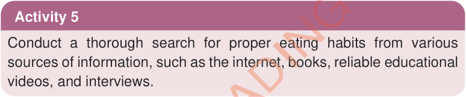
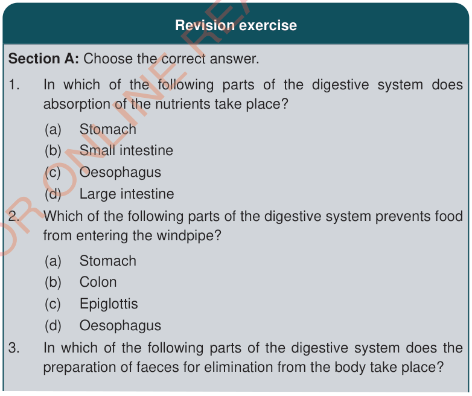

proportions. These essential nutrients include carbohydrates, proteins, fats, vitamins, minerals, and water. It is also important to have regular mealtimes and reduce the intake of unhealthy foods and snacks that lack essential nutrients.
It is advisable to consume whole grains and drink sufficient amounts of water to ensure proper functioning of the digestive system. Drinking water, half an hour before and after a meal is important for effective digestion and nutrient absorption. You can improve your body health and protect yourself from disorders in the digestive system by following these habits.


In which of the following parts of the digestive system does absorption of the nutrients take place?
Which of the following parts of the digestive system prevents food from entering the windpipe?
In which of the following parts of the digestive system does the preparation of faeces for elimination from the body take place?